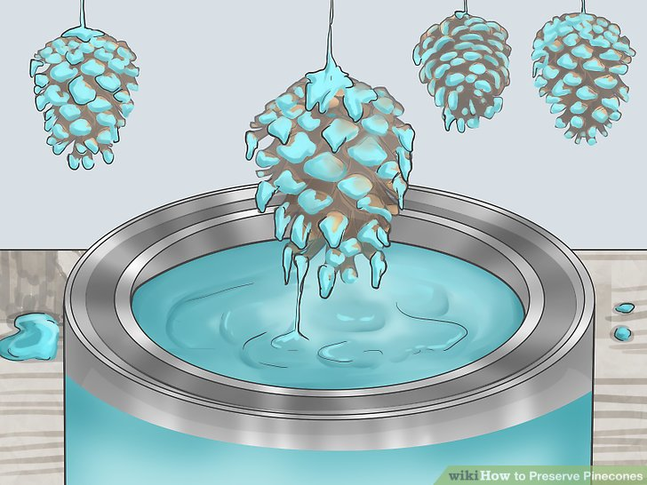

Nothing can be preserved "forever," but there are ways to preserve things to help them last a little longer. Pinecones often come dirty and filled with tiny bugs, which can cause them to deteriorate sooner. With a little bit of cleaning and drying, however, you can help them last longer. You can preserve them even further by sealing them with varnish, paint, or wax.
Table of Contents
Step 1: Soaking the Pinescones
Step 2: Baking the Pinecones
Step 3: Finishing the Pinecones
-
Collect some pinecones. You can use ones that are already opened, or you can use ones that are closed. Keep in mind that if you use closed pinecones, they will open up during the baking process.
- Store bought pinecones already come cleaned and ready to use.
- Remove any debris caught inside the pinecones. This includes things like seeds, moss, and pine needles. You can do this with a pair of tweezers or a brush. Don't worry about being too precise here, however; the next step will help clean the pinecones.
-
Prepare a solution of water and vinegar. Fill a sink, tub, or bucket with two parts water and one part white vinegar. How much water and vinegar you end up using depends on the size of your container and how many pinecones you are going to soak.
- You can also use a solution of 1 gallon (3.8 liters) of water and 1 teaspoon of mild dish soap.
- Soak the pinecones for 20 to 30 minutes. You need the pinecones to remain submerged during this step. If they don't stay down, you can weigh them down with a wet, heavy towel, a pot lid, or even a dinner plate. The pinecones may close up during this step. Don't worry, they will open back up.
- Transfer the pinecones to a sheet of newspaper and let them dry overnight. Be sure to leave them in a well-ventilated area, as this will help increase airflow. If you don't have any newspaper on hand, you can use paper bags or an old towel instead.
Step 1: Soaking the Pinecones
- Preheat your oven to 200 to 250°F (94 to 122°C).
- Transfer the pinecones to a baking sheet lined with parchment paper. If you don't have any parchment paper, you can use aluminum foil instead. Leave some space between each pinecone. This will allow the hot air to flow better between them. It will also give them room to open up.
- Bake the pinecones until they open up. This will take about 1 hour to 1 hour and 30 minutes, but it may take longer. Check the pinecones frequently so that they don't catch on fire. They are ready when they fully open and shiny.
- Transfer the pinecones to a wire cooling rack. Use a pair of oven mitts, tongs, or even a soup ladle to do this. Be careful while moving the pinecones; they will be very fragile.
- Allow the pinecones to cool. Once they are cool, you can paint them, display them, or seal them further. They will have a shiny coating on them, which is just melted sap. This can act as a natural preservative. If you want to preserve them further, read on to the next section.
Step 2: Baking the Pinecones


- Prepare your workspace and decide on a finishing method.Whether you are spraying your pinecone or dipping it in paint, you'll want to cover your counter or table with newspaper. If you are using a spray sealer, it would be even better to step outside. Once you have your space set up, choose a sealing method from the list below.
-
Spray the pinecones if you want something quick and easy. Choose a non-yellowing spray varnish. Lay the pinecones on their sides, then spray them using an even coat. Wait for the pinecones to dry, then rotate them and spray the other side. Let the sealer dry before applying another coat.
- Spray sealers come in many different finishes: matte, satin, and glossy. Choose one that you like the best.
- If you don't have any spray varnish, you can try using hairspray instead.
-
Use a marine varnish if you want something more durable. Purchase a marine varnish from a hardware or home improvement store. Put on a pair of disposable gloves and hold the pinecone by the tip. Use a cheap, disposable brush with stiff bristles to apply the varnish to the pinecone, except for the bottom. Let the varnish dry, then hold it by its sides, and coat the bottom and tip. Let the pinecone dry on its side.
- You can apply more than one coat of marine varnish, but you have to let the previous coat dry fully.
- Alternatively, you can tie some thread to the top of the pinecone, then dip it into the varnish. Lift it out, and let any excess varnish drip off, then tie the string somewhere so that the pinecone can hang dry.
-
Dip the pinecones in paint or varnish if you want a thicker coating. Wrap some string or thin wire around the top of a pinecone. Dip the pinecone into a can of paint or varnish. Lift the pinecone out, and hold it about the can for about 1 minute to let the excess paint/varnish drip back. Use the string or wire to hang the pinecone some place so that it can dry.
- Keep a newspaper or tray under the pinecone to catch any drips of paint or varnish.
- Keep in mind that this method may cause the pinecones to close up again.
- If the paint or varnish is too thick, thin it with water. Use 4 parts paint or varnish to 1 part water.
-
Dip the pinecones in beeswax as an alternative to varnish or paint. Melt enough solid beeswax in a crockpot to fully submerge the pinecone. Tie string around the tip of the pinecone, then use it to dip the pinecone into the melted wax. Lift the pinecone out, then dip it into a bucket of cold water. You may have to repeat this step a few times to get an even coverage.
- The more you dip the pinecone into wax, the more visible the wax will become. Your pinecone may end up yellow or white.
Step 3: Finishing the Pinecones
